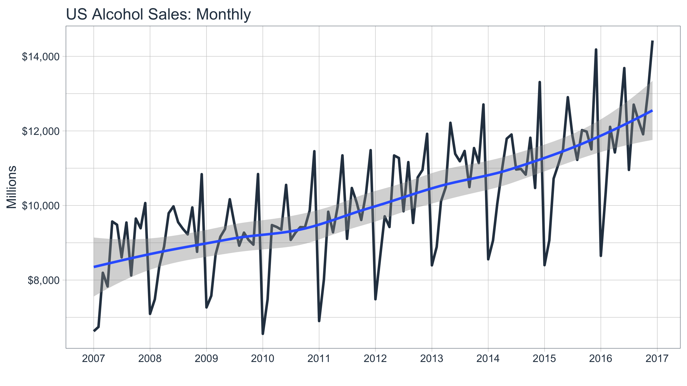
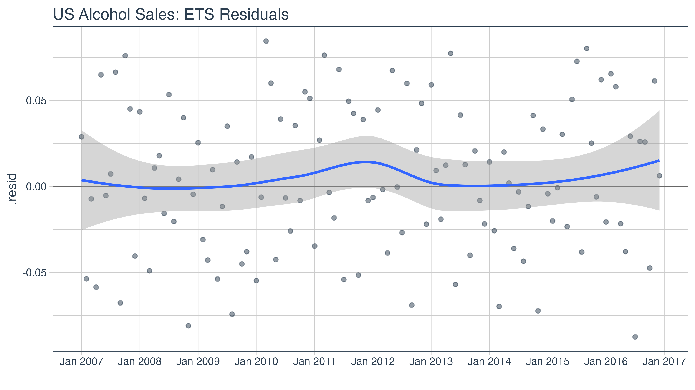
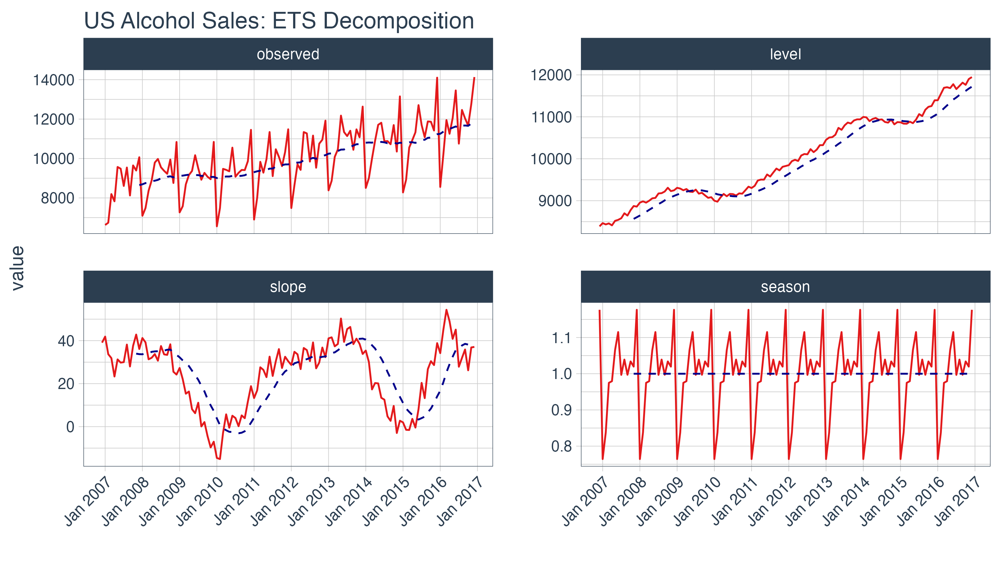
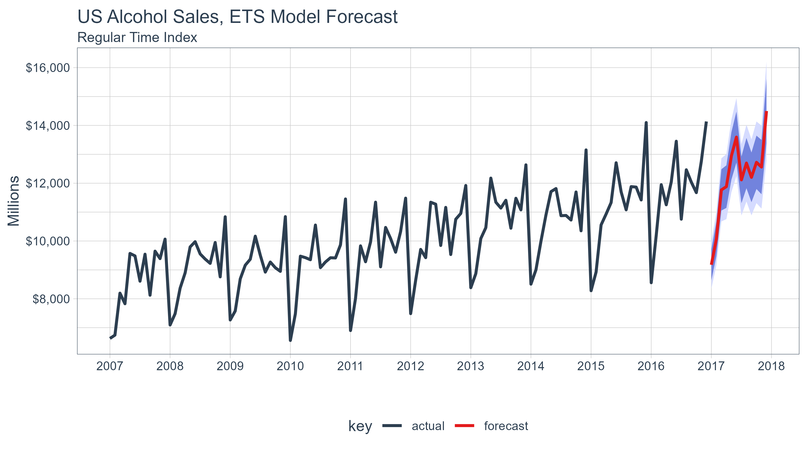
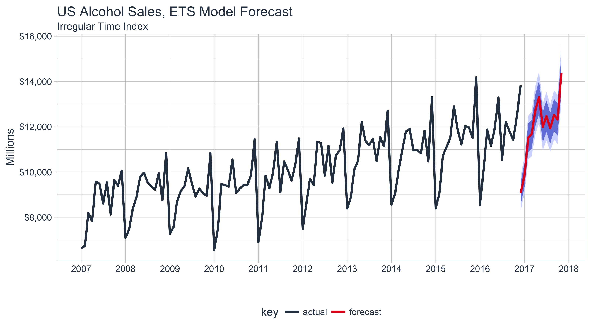

vignettes/SW00_Introduction_to_sweep.Rmd
SW00_Introduction_to_sweep.RmdExtending
broomto time series forecasting
The sweep package extends the broom tools (tidy, glance, and augment) for performing forecasts and time series analysis in the “tidyverse”. The package is geared towards the workflow required to perform forecasts using Rob Hyndman’s forecast package, and contains the following elements:
model tidiers: sw_tidy, sw_glance, sw_augment, sw_tidy_decomp functions extend tidy, glance, and augment from the broom package specifically for models (ets(), Arima(), bats(), etc) used for forecasting.
forecast tidier: sw_sweep converts a forecast object to a tibble that can be easily manipulated in the “tidyverse”.
To illustrate, let’s take a basic forecasting workflow starting from data collected in a tibble format and then performing a forecast to achieve the end result in tibble format.
Before we get started, load the following packages.
library(tidyverse)
## Warning: package 'ggplot2' was built under R version 3.6.2## Warning: package 'tibble' was built under R version 3.6.2## Warning: package 'tidyr' was built under R version 3.6.2## Warning: package 'purrr' was built under R version 3.6.2library(tidyquant)
## Warning: package 'lubridate' was built under R version 3.6.2## Warning: package 'zoo' was built under R version 3.6.2## Warning: package 'forecast' was built under R version 3.6.2We’ll use the tidyquant package to get the US alcohol sales, which comes from the FRED data base (the origin is the US Bureau of the Census, one of the 80+ data sources FRED connects to). The FRED code is “S4248SM144NCEN” and the data set can be found here.
alcohol_sales_tbl <- tq_get("S4248SM144NCEN", get = "economic.data", from = "2007-01-01", to = "2016-12-31") alcohol_sales_tbl
## # A tibble: 120 x 3
## symbol date price
## <chr> <date> <int>
## 1 S4248SM144NCEN 2007-01-01 6627
## 2 S4248SM144NCEN 2007-02-01 6743
## 3 S4248SM144NCEN 2007-03-01 8195
## 4 S4248SM144NCEN 2007-04-01 7828
## 5 S4248SM144NCEN 2007-05-01 9570
## 6 S4248SM144NCEN 2007-06-01 9484
## 7 S4248SM144NCEN 2007-07-01 8608
## 8 S4248SM144NCEN 2007-08-01 9543
## 9 S4248SM144NCEN 2007-09-01 8123
## 10 S4248SM144NCEN 2007-10-01 9649
## # … with 110 more rowsWe can quickly visualize using the ggplot2 package. We can see that there appears to be some seasonality and an upward trend.
alcohol_sales_tbl %>% ggplot(aes(x = date, y = price)) + geom_line(size = 1, color = palette_light()[[1]]) + geom_smooth(method = "loess") + labs(title = "US Alcohol Sales: Monthly", x = "", y = "Millions") + scale_y_continuous(labels = scales::dollar) + scale_x_date(date_breaks = "1 year", date_labels = "%Y") + theme_tq()
## `geom_smooth()` using formula 'y ~ x'
The forecasting workflow involves a few basic steps:
ts object class.sw_sweep() to tidy the forecast.Note that we purposely omit other steps such as testing the series for stationarity (Box.test(type = "Ljung")) and analysis of autocorrelations (Acf, Pacf) for brevity purposes. We recommend the analyst to follow the forecasting workflow in “Forecasting: principles and practice”
ts object classThe forecast package uses the ts data structure, which is quite a bit different than tibbles that we are currently using. Fortunately, it’s easy to get to the correct structure with tk_ts() from the timetk package. The start and freq variables are required for the regularized time series (ts) class, and these specify how to treat the time series. For monthly, the frequency should be specified as 12. This results in a nice calendar view. The silent = TRUE tells the tk_ts() function to skip the warning notifying us that the “date” column is being dropped. Non-numeric columns must be dropped for ts class, which is matrix based and a homogeneous data class.
alcohol_sales_ts <- tk_ts(alcohol_sales_tbl, start = 2007, freq = 12, silent = TRUE) alcohol_sales_ts
## Jan Feb Mar Apr May Jun Jul Aug Sep Oct Nov Dec
## 2007 6627 6743 8195 7828 9570 9484 8608 9543 8123 9649 9390 10065
## 2008 7093 7483 8365 8895 9794 9977 9553 9375 9225 9948 8758 10839
## 2009 7266 7578 8688 9162 9369 10167 9507 8923 9272 9075 8949 10843
## 2010 6558 7481 9475 9424 9351 10552 9077 9273 9420 9413 9866 11455
## 2011 6901 8014 9832 9281 9967 11344 9106 10469 10085 9612 10328 11483
## 2012 7486 8641 9709 9423 11342 11274 9845 11163 9532 10754 10953 11922
## 2013 8395 8888 10110 10493 12218 11385 11186 11462 10494 11540 11138 12709
## 2014 8557 9059 10055 10977 11792 11904 10965 10981 10828 11817 10470 13310
## 2015 8400 9062 10722 11107 11508 12904 11869 11224 12022 11983 11506 14183
## 2016 8650 10324 12109 11423 12242 13685 10955 12705 12276 11910 13021 14425A significant benefit is that the resulting ts object maintains a “timetk index”, which will help with forecasting dates later. We can verify this using has_timetk_idx() from the timetk package.
has_timetk_idx(alcohol_sales_ts)
## [1] TRUENow that a time series has been coerced, let’s proceed with modeling.
The modeling workflow takes a time series object and applies a model. Nothing new here: we’ll simply use the ets() function from the forecast package to get an Exponential Smoothing ETS (Error, Trend, Seasonal) model.
fit_ets <- alcohol_sales_ts %>% ets()
Where sweep can help is in the evaluation of a model. Expanding on the broom package there are four functions:
sw_tidy(): Returns a tibble of model parameterssw_glance(): Returns the model accuracy measurementssw_augment(): Returns the fitted and residuals of the modelsw_tidy_decomp(): Returns a tidy decomposition from a modelThe guide below shows which model object compatibility with sweep tidier functions.
| Object | sw_tidy() | sw_glance() | sw_augment() | sw_tidy_decomp() | sw_sweep() |
|---|---|---|---|---|---|
| ar | |||||
| arima | X | X | X | ||
| Arima | X | X | X | ||
| ets | X | X | X | X | |
| baggedETS | |||||
| bats | X | X | X | X | |
| tbats | X | X | X | X | |
| nnetar | X | X | X | ||
| stl | X | ||||
| HoltWinters | X | X | X | X | |
| StructTS | X | X | X | X | |
| tslm | X | X | X | ||
| decompose | X | ||||
| adf.test | X | X | |||
| Box.test | X | X | |||
| kpss.test | X | X | |||
| forecast | X |
Going through the tidiers, we can get useful model information.
sw_tidy() returns the model parameters.
sw_tidy(fit_ets)
## # A tibble: 17 x 2
## term estimate
## <chr> <dbl>
## 1 alpha 0.101
## 2 beta 0.0659
## 3 gamma 0.000436
## 4 phi 0.961
## 5 l 8387.
## 6 b 39.2
## 7 s0 1.18
## 8 s1 1.02
## 9 s2 1.04
## 10 s3 0.988
## 11 s4 1.04
## 12 s5 0.997
## 13 s6 1.12
## 14 s7 1.07
## 15 s8 0.972
## 16 s9 0.975
## 17 s10 0.828sw_glance() returns the model quality parameters.
sw_glance(fit_ets)
## # A tibble: 1 x 12
## model.desc sigma logLik AIC BIC ME RMSE MAE MPE MAPE MASE
## <chr> <dbl> <dbl> <dbl> <dbl> <dbl> <dbl> <dbl> <dbl> <dbl> <dbl>
## 1 ETS(M,Ad,… 0.0454 -1012. 2059. 2110. 15.2 430. 358. 0.0130 3.54 0.691
## # … with 1 more variable: ACF1 <dbl>sw_augment() returns the actual, fitted and residual values.
augment_fit_ets <- sw_augment(fit_ets) augment_fit_ets
## # A tibble: 120 x 4
## index .actual .fitted .resid
## <yearmon> <dbl> <dbl> <dbl>
## 1 Jan 2007 6627 6492. 0.0208
## 2 Feb 2007 6743 7032. -0.0411
## 3 Mar 2007 8195 8264. -0.00835
## 4 Apr 2007 7828 8254. -0.0516
## 5 May 2007 9570 9018. 0.0612
## 6 Jun 2007 9484 9494. -0.00108
## 7 Jul 2007 8608 8503. 0.0124
## 8 Aug 2007 9543 8948. 0.0665
## 9 Sep 2007 8123 8580. -0.0532
## 10 Oct 2007 9649 9007. 0.0713
## # … with 110 more rowsWe can review the residuals to determine if their are any underlying patterns left. Note that the index is class yearmon, which is a regularized date format.
augment_fit_ets %>% ggplot(aes(x = index, y = .resid)) + geom_hline(yintercept = 0, color = "grey40") + geom_point(color = palette_light()[[1]], alpha = 0.5) + geom_smooth(method = "loess") + scale_x_yearmon(n = 10) + labs(title = "US Alcohol Sales: ETS Residuals", x = "") + theme_tq()
## `geom_smooth()` using formula 'y ~ x'
sw_tidy_decomp() returns the decomposition of the ETS model.
decomp_fit_ets <- sw_tidy_decomp(fit_ets) decomp_fit_ets
## # A tibble: 121 x 5
## index observed level slope season
## <yearmon> <dbl> <dbl> <dbl> <dbl>
## 1 Dec 2006 NA 8387. 39.2 1.18
## 2 Jan 2007 6627 8442. 49.3 0.771
## 3 Feb 2007 6743 8454. 24.3 0.828
## 4 Mar 2007 8195 8471. 18.7 0.975
## 5 Apr 2007 7828 8444. -11.0 0.972
## 6 May 2007 9570 8486. 23.5 1.07
## 7 Jun 2007 9484 8508. 21.9 1.12
## 8 Jul 2007 8608 8539. 28.0 0.997
## 9 Aug 2007 9543 8624. 64.5 1.04
## 10 Sep 2007 8123 8639. 31.5 0.988
## # … with 111 more rowsWe can review the decomposition using ggplot2 as well. The data will need to be manipulated slightly for the facet visualization. The gather() function from the tidyr package is used to reshape the data into a long format data frame with column names “key” and “value” indicating all columns except for index are to be reshaped. The “key” column is then mutated using mutate() to a factor which preserves the order of the keys so “observed” comes first when plotting.
decomp_fit_ets %>% gather(key = key, value = value, -index) %>% mutate(key = forcats::as_factor(key)) %>% ggplot(aes(x = index, y = value, group = key)) + geom_line(color = palette_light()[[2]]) + geom_ma(ma_fun = SMA, n = 12, size = 1) + facet_wrap(~ key, scales = "free_y") + scale_x_yearmon(n = 10) + labs(title = "US Alcohol Sales: ETS Decomposition", x = "") + theme_tq() + theme(axis.text.x = element_text(angle = 45, hjust = 1))
## Warning: Removed 1 row(s) containing missing values (geom_path).
Under normal circumstances it would make sense to refine the model at this point. However, in the interest of showing capabilities (rather than how to forecast) we move onto forecasting the model. For more information on how to forecast, please refer to the online book “Forecasting: principles and practices”.
Next we forecast the ETS model using the forecast() function. The returned forecast object isn’t in a “tidy” format (i.e. data frame). This is where the sw_sweep() function helps.
fcast_ets <- fit_ets %>% forecast(h = 12)
We’ll use the sw_sweep() function to coerce a forecast into a “tidy” data frame. The sw_sweep() function then coerces the forecast object into a tibble that can be sent to ggplot for visualization. Let’s inspect the result.
sw_sweep(fcast_ets, fitted = TRUE)
## # A tibble: 252 x 7
## index key price lo.80 lo.95 hi.80 hi.95
## <yearmon> <chr> <dbl> <dbl> <dbl> <dbl> <dbl>
## 1 Jan 2007 actual 6627 NA NA NA NA
## 2 Feb 2007 actual 6743 NA NA NA NA
## 3 Mar 2007 actual 8195 NA NA NA NA
## 4 Apr 2007 actual 7828 NA NA NA NA
## 5 May 2007 actual 9570 NA NA NA NA
## 6 Jun 2007 actual 9484 NA NA NA NA
## 7 Jul 2007 actual 8608 NA NA NA NA
## 8 Aug 2007 actual 9543 NA NA NA NA
## 9 Sep 2007 actual 8123 NA NA NA NA
## 10 Oct 2007 actual 9649 NA NA NA NA
## # … with 242 more rowsThe tibble returned contains “index”, “key” and “value” (or in this case “price”) columns in a long or “tidy” format that is ideal for visualization with ggplot2. The “index” is in a regularized format (in this case yearmon) because the forecast package uses ts objects. We’ll see how we can get back to the original irregularized format (in this case date) later. The “key” and “price” columns contains three groups of key-value pairs:
ets() function (excluded by default)forecast() functionThe sw_sweep() function contains an argument fitted = FALSE by default meaning that the model “fitted” values are not returned. We can toggle this on if desired. The remaining columns are the forecast confidence intervals (typically 80 and 95, but this can be changed with forecast(level = c(80, 95))). These columns are setup in a wide format to enable using the geom_ribbon().
Let’s visualize the forecast with ggplot2. We’ll use a combination of geom_line() and geom_ribbon(). The fitted values are toggled off by default to reduce the complexity of the plot, but these can be added if desired. Note that because we are using a regular time index of the yearmon class, we need to add scale_x_yearmon().
sw_sweep(fcast_ets) %>% ggplot(aes(x = index, y = price, color = key)) + geom_ribbon(aes(ymin = lo.95, ymax = hi.95), fill = "#D5DBFF", color = NA, size = 0) + geom_ribbon(aes(ymin = lo.80, ymax = hi.80, fill = key), fill = "#596DD5", color = NA, size = 0, alpha = 0.8) + geom_line(size = 1) + labs(title = "US Alcohol Sales, ETS Model Forecast", x = "", y = "Millions", subtitle = "Regular Time Index") + scale_y_continuous(labels = scales::dollar) + scale_x_yearmon(n = 12, format = "%Y") + scale_color_tq() + scale_fill_tq() + theme_tq()

Because the ts object was created with the tk_ts() function, it contained a timetk index that was carried with it throughout the forecasting workflow. As a result, we can use the timetk_idx argument, which maps the original irregular index (dates) and a generated future index to the regularized time series (yearmon). This results in the ability to return an index of date and datetime, which is not currently possible with the forecast objects. Notice that the index is returned as date class.
## # A tibble: 6 x 7
## index key price lo.80 lo.95 hi.80 hi.95
## <date> <chr> <dbl> <dbl> <dbl> <dbl> <dbl>
## 1 2007-01-01 actual 6627 NA NA NA NA
## 2 2007-02-01 actual 6743 NA NA NA NA
## 3 2007-03-01 actual 8195 NA NA NA NA
## 4 2007-04-01 actual 7828 NA NA NA NA
## 5 2007-05-01 actual 9570 NA NA NA NA
## 6 2007-06-01 actual 9484 NA NA NA NA## # A tibble: 6 x 7
## index key price lo.80 lo.95 hi.80 hi.95
## <date> <chr> <dbl> <dbl> <dbl> <dbl> <dbl>
## 1 2017-07-01 forecast 12156. 11246. 10765. 13065. 13547.
## 2 2017-08-01 forecast 12751. 11726. 11183. 13777. 14320.
## 3 2017-09-01 forecast 12074. 11027. 10473. 13121. 13675.
## 4 2017-10-01 forecast 12713. 11525. 10895. 13902. 14531.
## 5 2017-11-01 forecast 12537. 11273. 10604. 13801. 14470.
## 6 2017-12-01 forecast 14437. 12871. 12041. 16004. 16833.We can build the same plot with dates in the x-axis now.
sw_sweep(fcast_ets, timetk_idx = TRUE) %>% ggplot(aes(x = index, y = price, color = key)) + geom_ribbon(aes(ymin = lo.95, ymax = hi.95), fill = "#D5DBFF", color = NA, size = 0) + geom_ribbon(aes(ymin = lo.80, ymax = hi.80, fill = key), fill = "#596DD5", color = NA, size = 0, alpha = 0.8) + geom_line(size = 1) + labs(title = "US Alcohol Sales, ETS Model Forecast", x = "", y = "Millions", subtitle = "Irregular Time Index") + scale_y_continuous(labels = scales::dollar) + scale_x_date(date_breaks = "1 year", date_labels = "%Y") + scale_color_tq() + scale_fill_tq() + theme_tq()

In this example, there is not much benefit to returning an irregular time series. However, when working with frequencies below monthly, the ability to return irregular index values becomes more apparent.